Mystery Spellen
Alle zaken spelen in je browser, op telefoon en computer. Geen account nodig; je voortgang blijft op je eigen apparaat.
Verhaalzaken
Verhoor de verdachten, zoek het bewijs, dien je aanklacht in.
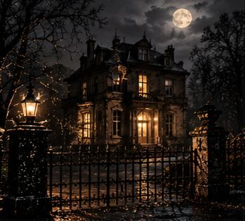
Villa Meridiaan
Een val van de keldertrap. Of toch niet?

Laatst gezien 23:14
Haar telefoon. Haar laatste avond. Eén bericht dat zij nooit schreef.
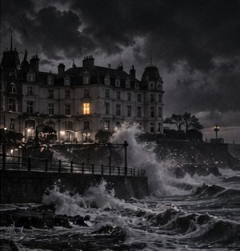
Zeezicht
Een gesloten badhotel, storm, een lichaam in het zwembad.
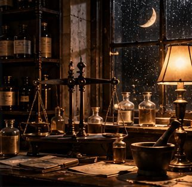
Halvemaan
De dokter tekende hartfalen. De apotheek zegt iets anders.
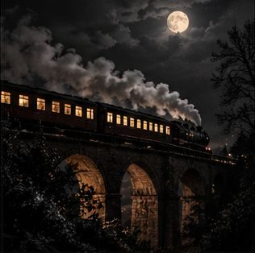
Nachttrein 212
Eén nachttrein. Geen stops. Eén dode vóór de ochtend.
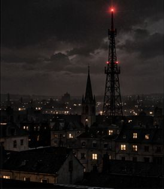
Nachtfrequentie
Iedereen verbergt iets. De radio speelt door.
Escape & 3D
Kijk zelf rond, kraak de sloten, vind de uitweg.

De Laatste Kaars
Dertien kaarsen. Vier geesten. Eén leugenaar.
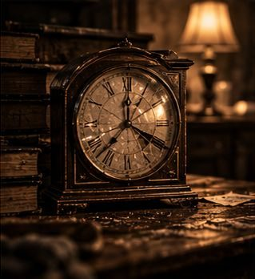
De Stilstaande Klok
Opgesloten met het lichaam. In 3D.
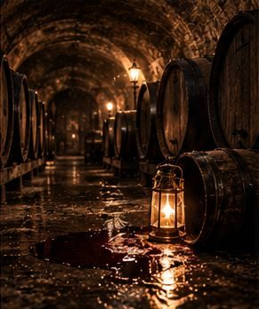
Het Lege Vat
Een wijnkelder, een lantaarn, een dode handelaar.
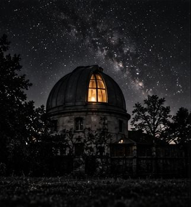
De Lichttafel
Het antwoord ligt tussen de fotoplaten.
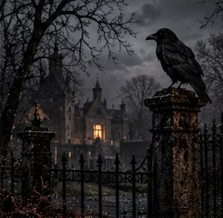
Ravenhorst
Elk vertrek van het landhuis verbergt een raadsel.
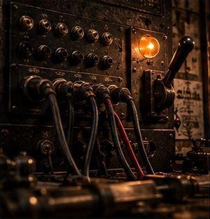
De Schakelkamer
Codes en documenten uit een atelier, 1963.
Logica & raster
Pen-en-papierpuzzels op het scherm. Eén oplossing, precies genoeg aanwijzingen.
De Zwarte Kolom
Drie nachten, drie doden, één rooster.
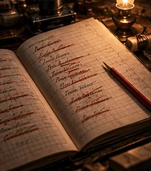
Het Pandjesboek
3.113 namen. Streep weg tot er één overblijft.
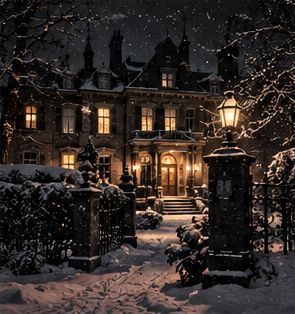
Hotel Winterlicht
Elf kamers, elf moordpuzzels, één gang.
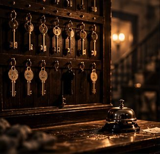
De Nachtportier
Vijf plattegronden. Eén portier die te veel wist.
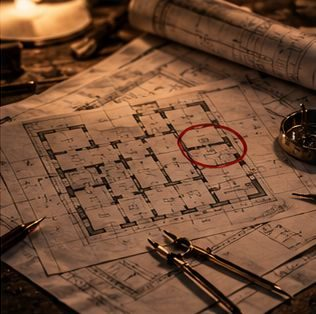
Het Grondplan
Wie waar stond bepaalt wie het deed.
Cozy & bouwen
Rustig spelen zonder klok. Er zit wel een echte zaak onder.

Enigma Match
Drie kaartjes op een rij. Eén kamer licht op.
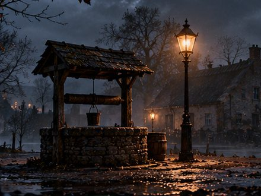
Het Zwijgende Dorp
Bouw het dorp op. Eén van wie terugkeert, liegt.
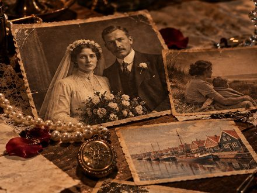
De Nalatenschap
Een zwak hart, zei de dokter. Het briefje op zolder zegt iets anders.
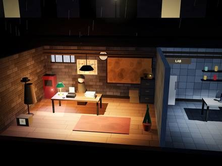
Afdeling Moord
Eén kelderbureau. Twaalf moorden. Bouw je afdeling.